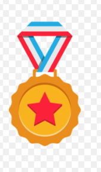

OBJECTIVE STATEMENT
Dedicated and empathetic Customer Care professional seeking to leverage strong communication and problem-solving skills to provide exceptional support and build lasting relationships with customers. Committed to enhancing customer satisfaction and contributing
to a positive brand reputation in a fast-paced service environment.
EDUCATION
Enugu state University of Science and Technology-Nigeria(2019)
BSC in Co-operatives and Rural Development
WORK EXPERIENCE
Customer Support Specialist
Cashigo international-Lagos,Nigeria
April 2021-Present
- Reduced avaerage response time by 25% through workflow automation
SKILLS
- Multi-channel communication(Email, chat, phone)
- Customer Relationship Management(CRM)
- Microsoft Office Suite & Documentation
CERTIFICATIONS
- Virtual Assistance - African Leadership Program(ALX),2022
- Chinese for Beginners - Peking University, Bejing, China
HOBBIES
CONTACT INFO